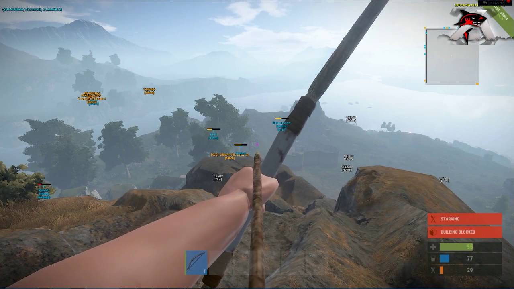

r
CheatParty
Главная
Помощь
Регистрация
Читы для игры Rust
Просмотр функций
Купить
Чит для игры Rust имеет многофункциональное меню.
Он поддерживает такие функции как:
ESP Hack - сможете видить всех игроков с разных частей карты

Aim Bot - все патроны, которыми вы стреляете будут лететь в голову
Купить чит
Последняя дата обновления: 26.10.2020